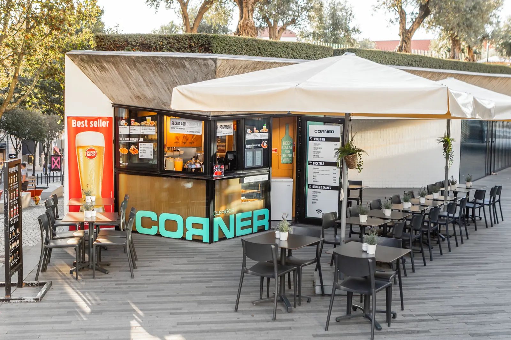
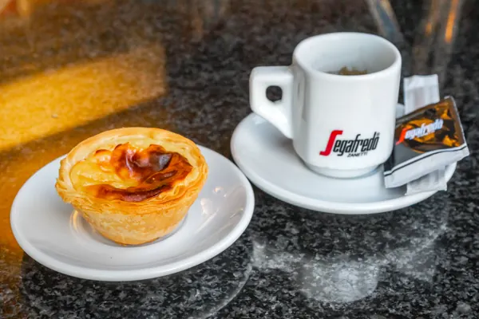
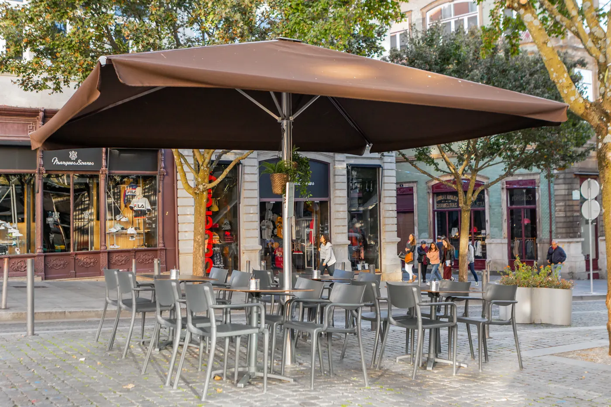
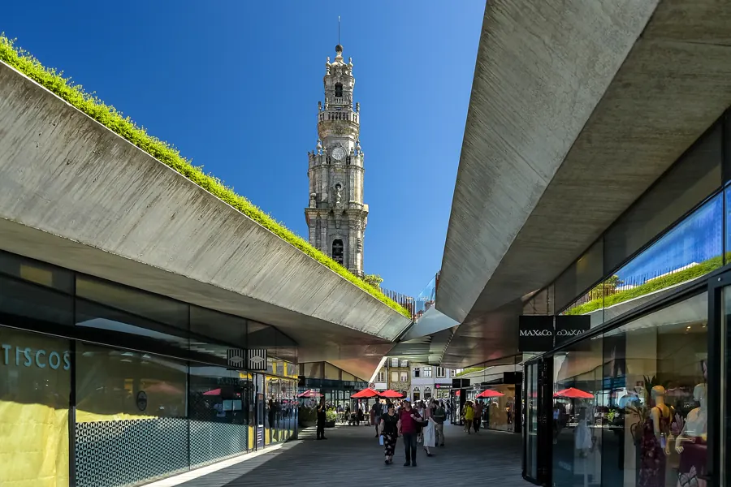

Café de dia. Bar à noite.
Um quiosque com esplanada no Passeio dos Clérigos, aos pés da torre.

Pare para um café. Fique para a esplanada.
Mesas ao ar livre no coração da Baixa. Comida a qualquer hora, do pequeno-almoço ao último copo.

Aos pés da Torre dos Clérigos
- Morada
Rua das Carmelitas 151, Loja L
Passeio dos Clérigos, 4050-161 Porto - Horário
Domingo a quinta 09h–20h
Sexta e sábado 09h–02h - Contacto
919 732 478
cornerclerigos@gmail.com